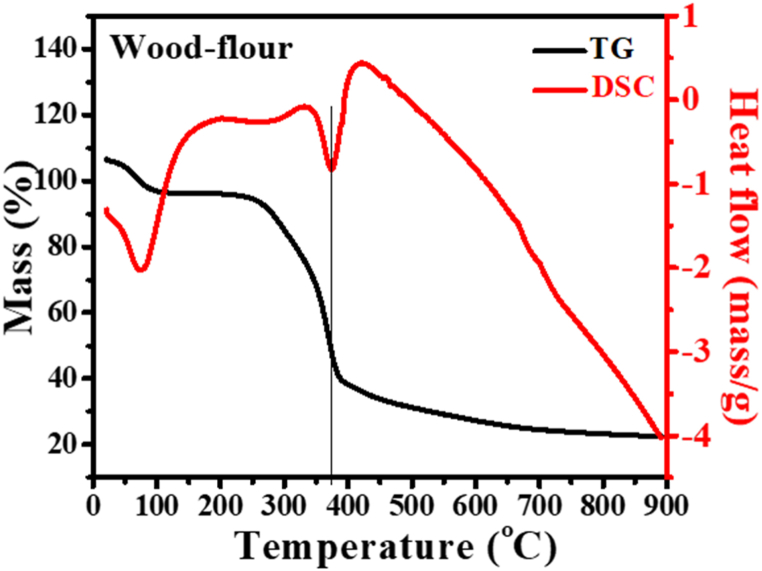
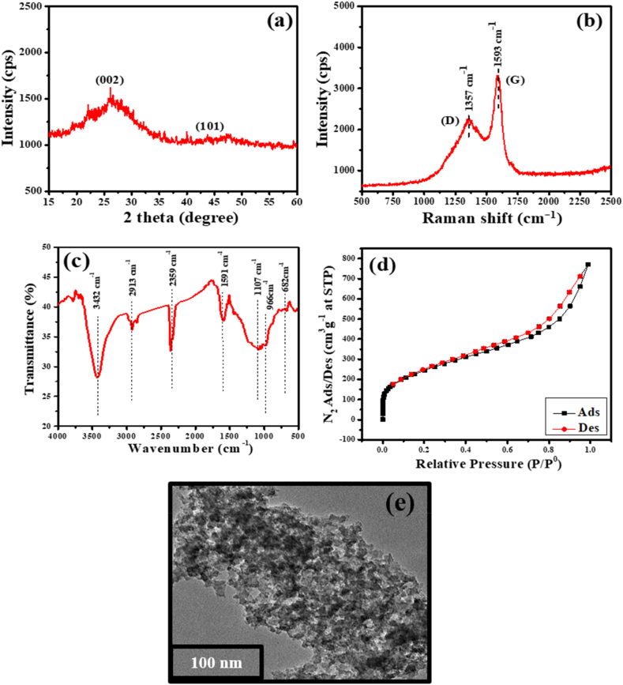
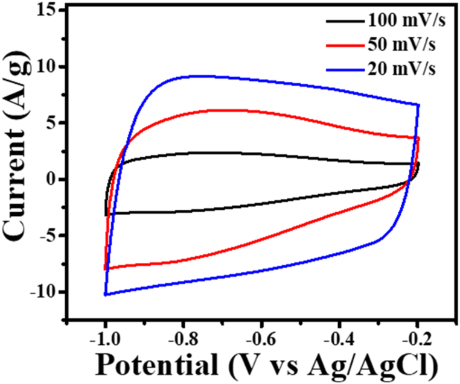
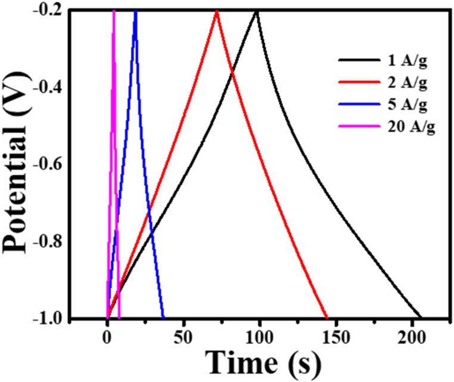
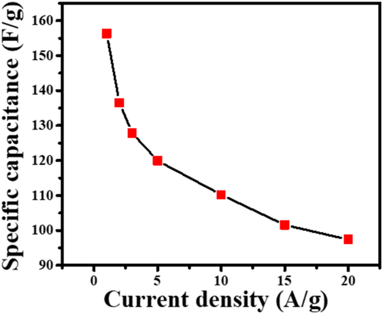
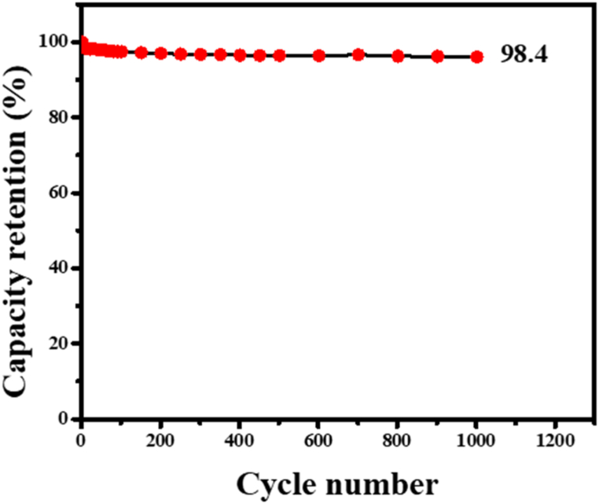
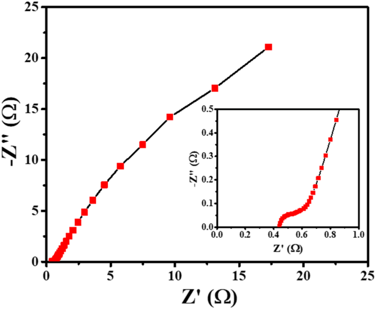
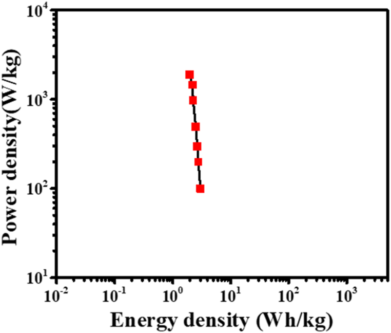
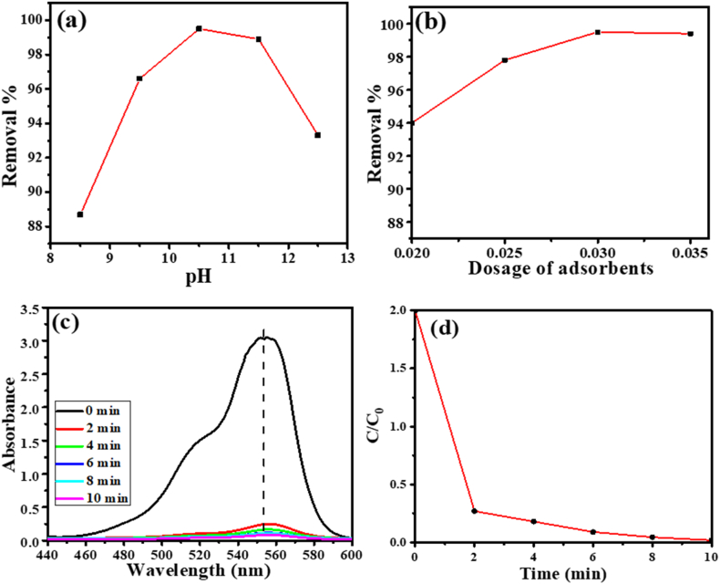

DOI: 10.1016/j.heliyon.2023.e21804
本地阅读版，依据出版社提交至PMC的原始JATS XML整理，供核对正文、图注、表格和原图。原始main.xml完整保留；此页不是出版社版式PDF。所有数字与正文冲突均保留原文，未修正或推算。实验准入状态见逐篇审核表。
This research investigates the utility of functionalized porous carbon (FPC), derived from the waste wood of Alnus nepalensis. It demonstrates FPC's dual suitability as a versatile component for energy storage systems, specifically supercapacitors, and its impressive capacity to adsorb malachite green (MG) dye from industrial wastewater. The synthesis of FPC occurred through a controlled two-step process: initial activation of wood powder with H3PO4, followed by carbonization at 400 °C for 3 h in a tube furnace. To comprehensively evaluate the material's attributes, multiple analytical methods were employed: Brunauer-Emmet-Teller (BET) analysis, Transmission Electron Microscopy (TEM) imaging, X-ray Diffraction (XRD) analysis, Raman spectroscopy, and Fourier Transform Infrared Spectroscopy (FTIR) spectroscopy. The prepared FPC exhibited desirable characteristics essential for achieving electrochemical performances and adsorption of dyes as well. TEM revealed voids within the material's structure, while BET confirmed high porosity with an active surface area of 1498 m2/g, a pore volume of 1.2 cm³/g, and a pore size of 4.6 nm featuring a harmonious presence of both micropores and mesopores. XRD and Raman spectroscopy confirmed FPC's amorphous state, and FTIR indicated oxygenated functional groups. As a supercapacitor electrode material, FPC demonstrated a specific capacitance of 156.3 F/g at 1A/g current density, an energy density of 5.1 Wh/Kg, a power density of 183.6 W/kg, and enduring cycling stability, retaining 98.4 % performance after 1000 charge-discharge cycles at 3A/g current density. In terms of dye adsorption, FPC exhibited remarkable efficiency. At a pH of 10.5 for MG dye, 0.030g of FPC displayed peak adsorption capacity, removing 95.6 % of 20 ppm MG within 2 min and an even more impressive 99.6 % within 6 min. These findings confirm FPC's potential from Alnus nepalensis as an outstanding supercapacitor electrode material and a rapid, efficient adsorbent for MG removal from industrial wastewater. This research suggests promising applications in energy storage and environmental remediation.
Keywords: Alnus nepalensis, Functionalized porous carbon (FPC), Energy storage, Energy density, Adsorption
Bio-waste materials, characterized by their ecological abundance and biodegradability, have gained significant attention as precursors for crafting functionalized porous carbon (FPC) materials. These FPC materials exhibit remarkable chemical, physical, and electrochemical attributes [1,2], rendering them ideal for applications in energy storage devices and removing organic pollutants from industrial effluents [3]. The utilization of bio-waste-derived FPC is on a steady rise due to its growing demand and distinct attributes. Notably, carbonaceous bio-wastes, which are naturally abundant, feature inherent hierarchical structures and heteroatom content, making them exceptional candidates for FPC production. This non-graphitic, highly porous carbon material offers an extensive surface area and customizable pore structures, thus positioning FPC as a preferred material for energy storage [[4], [5], [6]], adsorption [7,8], ion exchange, and catalysis [9].
To manipulate the porosity of these materials, various activation and carbonization methods are employed. Chemical and physical activation techniques [[10], [11], [12], [13]], phase separation [14], and template methods [15] have all been extensively utilized. Among these methods, the activation process followed by the carbonization process, effectively transforms carbonaceous materials into porous materials of micro, meso, and macro scales. Such materials have been extensively researched and applied in solving energy constraints due to the necessity of replacing fossil fuels with renewable sources of energy.
The demand for high-performance electrochemical energy storage devices, exemplified by supercapacitors, necessitates attributes such as high power density, moderate energy density, and wide operating temperatures [11]. This has prompted intensive research into new materials and their energy storage mechanisms. Supercapacitors operate through electrostatic charge attraction (Electric double-layer capacitor, EDLC) [11,16] and redox reactions (Pseudocapacitor) [4]. While EDLC-type materials excel in power density and cycling stability, they often fall short in energy density [17,18]. Conversely, pseudocapacitive materials offer higher energy density but often exhibit reduced cycling stability [19]. Consequently, recent investigations focus on leveraging porous carbonaceous materials to enhance energy density, power density, and cycling stability.
Recent studies have spotlighted bio-waste-derived FPC materials for these applications. For instance, Hwang et al. harnessed natural silk to produce highly porous carbon, boasting impressive electrochemical properties with substantial retention after cycles [20]. Similarly, coconut shells yielded highly porous carbon nanospheres with excellent cycling stability [21]. Sunflower seed shells and carrageenan were also used, displaying promising electrochemical performance [22,23]. Notably, attention has shifted toward phosphoric acid activation to create mesopores alongside micropores [22,24].
In contrast to previous studies that have focused on other bio-waste sources, such as silk, coconut shell, and sunflower seed shells [[20], [21], [22]], this research uniquely centers on Alnus nepalensis bio-waste. By extending the scope of wood waste applications to encompass both energy storage and pollutant removal, this study aims to unveil the diverse capabilities of Alnus nepalensis-derived FPC material that was chemically activated by H3PO4. The choice of H3PO4 as activating agent was due to its well-reported superiority in dehydrating the lignocellulosic material at lower temperature (75 °C). Moreover, H3PO4 also helps to form a bridge that connects the fragments of biopolymers (layers of carbon structure) by forming phosphate and polyphosphate linkages. It helps in overall structural dilation, opens the pores, and enlarges the surface area of lignocellulosic material [25].
Alnus nepalensis commonly known as the Nepalese Alder or Utis, is a prominent tree species found abundantly across the lush landscapes of Nepal [26]. This versatile tree holds great significance in various domains, particularly in the realm of carpentry, where its unique properties and characteristics make it a valuable resource. Its carpentry waste (bio-waste) has been utilized in this study.
Moreover, in a recent publication, efficient removal of Rhodamine B (RhB) dye from wastewater using bio-waste of Dalbergia sisoo was demonstrated [3,7], further emphasizing the potential of wood-based bio-wastes in addressing environmental challenges.
In summary, the present investigation delves into utilizing Alnus nepalensis bio-waste as a novel and promising precursor material for synthesizing highly functionalized porous carbonaceous materials. By exploring its distinctive properties and applications, this study aims to contribute to the expanding field of sustainable materials, energy storage, and pollutant removal, ultimately advancing both environmental and technological fronts.
Alnus nepalensis wood waste was gathered from nearby carpentry in Lalitpur, Nepal. Alnus nepalensis, commonly called Utis in Nepal, is a significant multipurpose tree. It is found at an altitude of 900–2700 m above sea level [26]. The main products of these trees are wood, green leaves, and fuel. The leaf decay is also used as manure and to safeguard soil conservation [27].
All chemicals used in this study were analytically graded. 85 % pure phosphoric acid having 1.73 g/mL of specific gravity was procured from Fischer Scientific, India (P) Ltd., and it was used as the activating agent to make FPC. Double-distilled water with a resistivity of 18.2 MΩ-cm was used throughout the experimental work. Polyvinylidene fluoride (PVDF), Carbon black, and N-methyl pyroline (NMP) were procured from Sigma-Aldrich (USA). Similarly, Ni-foam was procured from PRED MATERIALS International (USA) for use as a current collector electrode. An electrochemical measurement was performed in a 6.0 M potassium hydroxide (KOH) electrolyte which was purchased from Ajax Finechem, Thermo Fisher Scientific. The Malachite green dye was acquired from the esteemed supplier Alfa Aesar (A13572), while the aqueous NH3 (30 %) was obtained from the reputable source, Baker.
FPC was obtained via a previously reported synthesis protocol [3,28]. The collected wood waste of Alnus nepalensis (Utis), was washed with tap water 3, 4 times, sun-dried for a week, pulverized using a high-speed electric wood grinder, and put through a sieve of 150 μm to obtain fine wood powder. Grinding FPC has multiple benefits. Grinding of FPC increases surface area, enhances ion transport, reduces diffusion path length, improves electrical contact, and enables better pore accessibility. These effects collectively lead to higher capacitance, faster charge-discharge rates, and improved overall performances of supercapacitors in electrochemical energy storage systems. The enhancement of the specific surface area is also crucial for the adsorption processes of pollutants like dyes [[28], [29], [30]].
The obtained fine powder was chemically activated by soaking in 85 % H3PO4 for 24 h and oven dried for 2 h at 110 °C.
To carbonize the obtained wood powder, a tubular furnace set at a temperature of 400 °C was used under the flow of N2 at 100 mL/min for 3 h. Then it was cooled down to room temperature and washed several times using distilled water till its pH turn out to be neutral. The functionalized porous carbon (FPC) thus obtained was finally dried at 110 °C and ground to a fine powder and was used for both physical and electrochemical analyses [18,28].
The raw wood powder of Alnus nepalensis underwent TGA/DSC analysis using the SDT Q600V20.9 Build 20 USA Thermogravimetric analyzer to understand its thermal properties. The functionalized porous carbon (FPC) was characterized through distinct approaches.
1.
The phase state of FPC was investigated using X-ray diffraction (XRD) with a RIGAKU X-ray diffractometer from Japan.
2.
To assess defects, Raman spectra were obtained using the labRAM HR800 from France (JOBIN YVON Finland).
3.
The oxygen content of FPC was analyzed through Fourier Transform Infrared Spectroscopy (FTIR) using the VERTEX 70/80 from the USA (BRUKER-OPTIK GMBH, Germany).
4.
Surface area and porosity characteristics were measured using the Brunauer-Emmett-Teller (BET) method, employing the Micromeritics ASAP 2020 system from the USA.
5.
Transmission Electron Microscopy (TEM) using the JEOL JEM 2100 instrument was used to observe the surface morphology of FPC.
The FPC-electrode-material was assembled as reported in previous studies [11]. A mixture composed of 8 mg of FPC, 1 mg carbon black powder, and 1 mg PDVF was dissolved in 200 μL NMP solution. A slurry was obtained by grinding the mixture which was coated on Ni-foam (70 μL of slurry on a 1 cm2 area). The slurry-coated Ni foam was dried at 70 °C for 12 h. Thereafter, it was pressed at 10 kPa for a minute. The uncoated part of Ni-foam was used for connecting a copper lead wire. Thus assembled FPC-electrode was activated by immerging in 6. O M KOH solution for 12 h.
The electrochemical behavior of the FPC-electrode was tested in 6.0 M KOH solution employing a three-electrode setup, comprising FPC as the working electrode, Pt-plate as a counter electrode, and Ag/AgCl as a reference electrode. A Metrohm Autolab (PGSTAT 302 N) workstation, was used for electrochemical measurements.
The CV was carried out in between the anodic and cathodic potential limit of −1 to−0,2 V. V at the scan rates of 20, 50, and 100 mV/s. The same potential window was used to perform GCD using load current densities of 1, 2, 5, and 20 A/g. From the GCD curves, parameters like specific capacitance, energy density, power density, and cycle life (% retention) were calculated. Likewise, EIS measurement was carried out in the frequency range of 100 kHz to 0.1 Hz using an AC signal of 10 mV. Nova 1.1 software was used for fitting the EIS data [2,31].
A stock solution of MG dye was prepared with a concentration of 20 ppm by dissolving 0.020 g of the dye in 1 L of double-distilled water. The experimental set up began by placing 100 mL of the MG dye solution into 250 mL Erlenmeyer flask. Into the flask, 0.02 g of FPC was carefully introduced, and the mixture was stirred at 400 rpm for about 5 min while maintaining a neutral pH level. During the stirring process, 3 mL of the resulting mixture was sequentially transferred into individual micro-centrifuge tubes at 2 min intervals. This process was repeated five times. Afterward, to eliminate insoluble particles, centrifugation was performed on all five micro-centrifuge tubes at 400 rpm for 5 min. The supernatant liquid obtained from this step was then employed for subsequent analysis using UV–Vis spectrometer (Scinco, Mega-2100, Double Beam).
Table 1 displays the observed value (%) discovered through the close examination of Alnus nepalensis wood powder. The sample's low moisture content, and low ash content both show that the raw material is suitable for making functionalized porous carbon (FPC). Moreover, the cellulose, hemicellulose, and lignin components present in the wood powder are 53 %, 14.8 %, and 32.2 % respectively.
Proximate analysis of wood-powder (Alnus nepalensis (Utis)).
Table 1| S·N | Parameter | Observed value (%) |
|---|---|---|
| 1. | Moisture | 8.6 |
| 2. | Total Ash | 1.1 |
| 3. | Volatile Matter | 41.0 |
| 4. | Total carbon | 49.3 |
TGA/DSC of the raw wood powder of Alnus nepalensis, as depicted in Fig. 1, shows the completion of the carbonization process below 400 °C similar to the findings in our previous studies [11,32]. Only a small amount of mass was lost at temperatures close to 100 °C, which was ascribed to dehydration, according to the TG curve. A sharp apex in the DSC curve at 100 °C served as proof. Similar to this, a peak with an indistinct contraction was seen between 200 and 300 °C. Correspondingly, in the TG, a mass loss was seen in the DSC curve due to the breakdown of hemicelluloses, which was clearly seen at 300 °C. A noticeable mass loss was found in the 300–400 °C range in the TG curve after additional heating. This was also confirmed by a sharp depression at around 390 °C of the DSC curve. From the results, it was accepted that cellulose broke down and got converted into organic volatile matter at around 300 °C. From the TG curve, it is obvious that the precursor material lost about 60 % of mass at a carbonization temperature of 400 °C used in this study [11,33]. Above 400 °C the carbonization of the precursor became stable. Therefore, 400 °C was considered to be a suitable carbonization temperature.
TGA/DSC curves of raw wood-powder of Alnus nepalensis.
Fig. 1
Fig. 2a displays the XRD patterns of FPC. In XRD analysis, the specific orientations of crystallographic planes, (002) and (100), are identified through distinct peaks around 23.5 and 43.5° respectively. These peaks correspond to the arrangement of atoms within FPC's crystalline structure. Additionally, the presence of an amorphous carbon component is evident from the broad peak centered around 20–30° 2θ, indicating the existence of disordered carbon regions [11,34,35].
(a) XRD pattern of FPC, 2(b) Raman Spectra of FPC, 2(c) FTIR Spectra of FPC, 2(d) N2 adsorption/desorption isotherms at 77 K of FPC, 2(e) TEM image of FPC.
Fig. 2
The amorphous nature of FPC is further supported by Raman spectra (Fig. 2b). The D band (1357 cm−1) signifies defects and disorder in the carbon structure, while the G band (1593 cm−1) represents sp2 hybridized carbon atoms in graphitic structures. A G/D ratio of approximately 1.5 indicates a highly disordered carbon structure, favorable for ion movement and electrochemical reactions in energy storage devices [34].
The FTIR spectra (Fig. 2c) reinforce the functionalization of FPC. Peaks at 3432 cm−1 are attributed to –OH stretching vibrations of carboxyl, phenol, alcohol, and absorbed water, indicating enhanced functionalization due to H3PO4 impregnation [27]. The band between 2330 and 2359 cm−1 is attributed to aliphatic C–H stretching absorption [[2], [3], [4]]. Other peaks like the one at approximately 1591 cm−1 [25,36], indicate olefinic C <svg xmlns="http://www.w3.org/2000/svg" version="1.0" width="20.666667pt" height="16.000000pt" viewBox="0 0 20.666667 16.000000" preserveAspectRatio="xMidYMid meet"><metadata> Created by potrace 1.16, written by Peter Selinger 2001-2019 </metadata><g transform="translate(1.000000,15.000000) scale(0.019444,-0.019444)" fill="currentColor" stroke="none"><path d="M0 440 l0 -40 480 0 480 0 0 40 0 40 -480 0 -480 0 0 -40z M0 280 l0 -40 480 0 480 0 0 40 0 40 -480 0 -480 0 0 -40z"/></g></svg> C vibrations in aromatic rings. The presence of broadband around 1107 cm−1 signifies C–O stretching in various functional groups, often associated with oxidized carbon. These observations collectively suggest the formation of oxygen-containing groups as a result of efficient H3PO4 functionalization.
The BET results (Fig. 2d) reveal FPC's porous characteristics. The N2 adsorption-desorption isotherms, analyzed using the Brunauer-Deming-Deming-Teller (BDDT) method, show a Type II, H3 isotherm, indicating the presence of both micropores and mesopores. The sudden rise in N2 uptake below P/P0 < 0.1 indicates a dearth of micropores, while a steady increase in nitrogen uptake up to P/P0 = 0.4 suggests the existence of mesopores. Beyond P/P0 = 0.5, a clear hysteresis loop reflects the abundance of mesopores [[37], [38], [39]]. The BET-specific surface area, pore size, and pore volume of FPC were determined and are outlined in Table 2.
BET-specific surface area, pore size, and pore volume of FPC.
Table 2| Active material | Specific Surface area (m2/g) | Pore size (BJH Ads) (nm) | Pore volume (BJH Ads) (cm3/g) |
|---|---|---|---|
| FPC | 1498.4 | 4.6 | 1.2 |
So, the observed peaks in XRD, Raman, and FTIR spectra collectively signify FPC's crystalline and amorphous components, as well as the presence of functional groups that enhance its electrochemical performance. The BET results support the existence of both micropores and mesopores, crucial for their porous structure and performance in energy storage and adsorption applications.
The FPC exhibited a surface area of 1498 m2/g, a pore size of 4.6 nm, and a pore volume of 1.2 cm3/g.
Fig. 2e illustrates the TEM image of FPC showing the presence of the highly porous network. From the micrograph, the pore size can be estimated to vary in the range of 4–10 nm. This information gives insight into the microstructure of FPC, showing that it possesses a porous morphology with nanoscale pores. The presence of such a porous structure can influence various properties of the material, including its surface area, conductivity, and potential for ion and molecule adsorption.
The CV of the FPC electrode measured in 6.0 M KOH solution at varying scan rates of 20 mV/s, 50 mV/s, and 100 mV/s is shown in Fig. 3. A rectangular shape CV curves representing the electrical double layer capacitance (EDLC) characteristic of FPC can be observed in the figure. No redox peaks could be seen in the curves, but as reported in our earlier publications [2,4,11], the large current density indicated high specific capacitance. The plateau current was found to increase with the scan rate, and the maximum current at a specific scan rate was found to be suitable for supercapacitor applications [40,41].
CV measurements of FPC-electrode in between the anodic and cathodic potential limit of −1 to−0.2 V. V at the scan rates of 20, 50, and 100 mV/s.
Fig. 3
Fig. 4 illustrates GCD curves of the FPC electrode at various load current densities.
GCD curve of FPC-electrode in the potential window −1 to −0.2 V.
Fig. 4
From the occurrence of linear charge-discharge lines with time, the FPC was found to behave as an EDLC [42,43]. The linear curve revealed that the material was pure and that the electrolyte ions were inserted into the pore of FPC. As the load current increases, the charge-discharge time decreases. From the discharge time, the specific capacitance (Cs) was calculated using equation (1).
(1)in this equation, Cs (F/g) stands for the specific capacitance (derived from GCD), I(A) for the current, m(g) for the mass of the FPC, V(V) for the potential window, and t(s) for the discharge time. For a load current of 1 A/g, the specific capacitance was found to be 156.3 F/g.
The relationship between load current and specific capacitance is depicted in Fig. 5. The plot clearly shows that specific capacitance rapidly decreased with load current up to 5 A/g. Above 5 A/g, the specific capacitance gradually decayed. At higher load current, the time for ion rearrangement in the double layer region is short, therefore, a low value of specific capacitance was obtained.
Specific capacitance of FPC-electrode as a function of current density.
Fig. 5
From equation (1), the specific capacitance of the FPC-electrode at 1, 2, 3, 5, 10, and 20 A/g load current was calculated to be 156.3 F/g, 136.5 F/g, 127.9 F/g, 119.9 F/g, 110.2 F/g, 101.5 F/g, and 97.4 F/g, respectively.
In the capacity retention (%) analysis, the focus was on assessing the long-term cycling stability of the FPC-electrode, which is a crucial aspect of its practical application in supercapacitors. Supercapacitors are often subjected to daily charge-discharge cycles, causing gradual degradation over time [2]. One important parameter that reflects this stability is the capacity retention percentage. This percentage represents the ratio of the capacitance maintained after a certain number of cycles to the initial capacitance.
In the present study, the FPC-electrode underwent 1000 continuous charge-discharge cycles at a fixed current density of 3 A/g (Fig. 6). Remarkably, at the end of this cycling test, the FPC-electrode retained approximately 98.4 % of its initial capacitance. This high capacity retention indicates that the electrode's performance remained robust and relatively unchanged even after prolonged cycling, suggesting excellent cycling stability. Such behavior is a positive indicator for practical supercapacitor applications, where long-term reliability is essential.
Capacity retention (%) of FPC-electrode.
Fig. 6
The electrochemical impedance spectroscopy (EIS) analysis was used to learn more about the ion diffusion behavior and charge transfer kinetics of the FPC-electrode. The electrode's electrochemical behavior can be inferred from the Nyquist impedance plot (Fig. 7).
Nyquist plot of FPC-electrode at a frequency range of 100 KHz to 0.1 Hz at the perturbation signal with 10 mV AC voltage in 6 M KOH aqueous solution.
Fig. 7
In the high-frequency region of the Nyquist plot, an incomplete semicircle is observed. This semicircle is indicative of charge transfer resistance, whereas a smaller semicircle suggests faster charge transfer kinetics. This characteristic suggests that the FPC-electrode exhibits efficient charge transfer at its surface [36].
In the low-frequency region, a linear line at a 45° angle is observed. This linear behavior implies that the ion diffusion process within the FPC-electrode is rapid, contributing to its excellent electrochemical performance. The low value of the real impedance (0.7 Ω) further supports the notion of fast charge transfer kinetics, indicating a facile movement of charges within the electrode material. Furthermore, the relatively high-frequency straight line in the impedance response signifies quick charge transport within the FPC-electrode [36,44]. This is a favorable characteristic for supercapacitor applications that require high power density, as it indicates that the electrode can handle rapid charge and discharge cycles effectively.
In terms of internal resistance, the EIS results reveal that the FPC electrode has an impressively low internal resistance of around 0.41 Ω. This low resistance value is beneficial because it enhances both ion diffusion and charge transfer processes. As a result, the FPC-electrode can achieve higher power density, making it well-suited for applications demanding rapid energy storage and release.
In summary, the capacity retention percentage demonstrates the FPC-electrode's excellent cycling stability, with minimal degradation even after prolonged charge-discharge cycles. The EIS results provide a detailed understanding of the electrode's charge transfer kinetics and ion diffusion behavior, highlighting its suitability for supercapacitor applications requiring high power density and efficient energy storage. The combination of these analyses underscores the promising performance of the FPC-electrode in practical energy storage devices.
Fig. 8 compares the power density and energy density of the FPC-electrode at various load currents in GCD measurements (Fig. 4).
Ragone plot of FPC-electrode.
Fig. 8
Equations (2), (3) were used to calculate the energy and power densities of FPC-electrode using a 3-electrodes setup.
(2) (3)in the equations, E is the energy density in Wh/kg, P is the power density in W/kg, Csp is the specific capacitance in F/g, ΔV is the potential window, and Δt (s) is the discharge time. In equation (2), a denominator of 8 is used instead of 2 as used in the 2-electrode system. It is well known that the energy density of symmetric 2-electrode cells is 4 times higher than the 3-electrode setup [45].
Table 3 summarizes the calculated values of specific capacitance, energy density, power density, capacity retention (%), and ESR [46].
Specific values for capacitance, energy density, power density, and ESR for FPC.
Table 3| Electrode | Potential window ((V) | Specific capacitance (F/g) at 1 A/g | Energy density(Wh/kg) | Power density (W/kg) | ESR(Ω) |
|---|---|---|---|---|---|
| FPC | −1 to −0.2 | I56.3 | 5.1 | 183.6 | 0.41 |
The FPC prepared in this study was also tested for its adsorption behavior. It is worth mentioning that the adsorption capacity of an adsorbent mainly depends on its surface functionality which is imparted in the material during the activation process. Other factors that contribute to adsorption capacity are the active surface area, pore size, pore volume, and morphology. On the other hand, variables like initial dye concentration, contact time, dose, and pH of the solution are important factors that affect the adsorption of dye. Therefore, by optimizing these parameters, the process of removing dye or treating wastewater can be improved.
The spectrophotometric method was used to study the adsorption of MG dye at various alkaline pH. For this, a consistent quantity of 20 parts per million (ppm) of this dye was taken. Additionally, the dye was mixed with a standard dose of 0.030 g of FPC for every 100 mL of the solution. To evaluate the influence of pH, the pH levels of the solution were altered within the range of 8.5–12.5. Fig. 9a illustrates the effect of pH on the adsorption of MG dye, the maximum adsorption was observed at pH 10.5 [24,47,48]. This observation indicates that there exists an optimal pH condition for maximizing the effective adsorption of the dye molecules onto the FPC surface. As the pH of the solution increases the FPC's surface acquires an augmented negative charge. This negativity emerges due to the attraction and binding of hydroxide ions (OH-) from the solution onto the surface of the FPC. Consequently, this negative surface charge becomes attractive to the positively charged MG dye molecules, facilitating their binding to the FPC [47,49] surface. However, an intriguing phenomenon takes place beyond the pH of 10.5. The heightened negativity of the FPC's surface starts to evoke a repulsion effect against the negatively charged MG dye molecule; as a result, there is a decrease in the percentage of dye removal from the solution. This repulsion effect can be likened to the way similar poles of magnets push each other apart. This explains the dip observed in the percentage of dye removal after pH 10.5. In all the cases, the measurement time was about 5 min assuming that the adsorption of dye would complete in this time period.
(a) Effect of pH on removal of MG by FPC, (b) MG dye adsorption by FPC at a dose of 0.030 g; (c) Adsorption spectra of MG with 0.030 g of FPC at various times and pH 10.5, (d) Plot of ratio of the concentration of MG at specific time interval to initial concentration against equilibrium time.
Fig. 9
The impact of the dosage of FPC on the adsorption of MG dye was examined. Various amounts of the adsorbent FPC (0.020, 0.025, 0.030, and 0.035 g/100 mL) were mixed with a solution containing 20 parts per million (ppm) of MG dye. The mixture was vigorously agitated in a pH 10.5 solution for a duration of 5 min, after which the adsorption capacities of the different dosages were measured.
Upon increasing the dosage of the adsorbent, a notable trend emerged. The adsorption rate demonstrated an upward trajectory (as depicted in Fig. 9b), reaching a saturation point at 0.030g with an efficiency of 99.6 %. This outcome can be attributed to a specific phenomenon: as the quantity of FPC increased, more available sites for adsorption became present. Consequently, a greater number of dye molecules found surfaces to adhere to, leading to the increased adsorption rate observed [[49], [50], [51], [52]].
However, a distinctive shift occurred when the FPC dosage surpassed 0.030g. Although the potential adsorption sites continued to increase, the availability of dye molecules for adsorption became a limiting factor. Consequently, beyond the 0.030g threshold of FPC, the percentage of dye removal experienced a marginal reduction.
To concisely summarize the outcomes pertaining to the influence of dosage on adsorption efficiency, the results have been collated in Table 4.
Adsorption effectiveness of MG dye with respect to the surface area, pH, sample doses, and adsorption capacity in 10 min.
Table 4| S·N. | Surface area (m2/g) | Dose(g/L) | Initial conc. (ppm) | Adsorption capacity (%) |
|---|---|---|---|---|
| 1 | 1498.4 | 0.020 | 20 | 95.6 |
| 2 | 0.025 | 97.2 | ||
| 3 | 0.030 | 99.6 | ||
| 4 | 0.035 | 99.4 |
The exceptional adsorption capacity of FPC can be attributed to its remarkable attributes, namely its extensive functionalized nature and its porous morphology. This characterization has been affirmed by analysis involving techniques such as FTIR, BET surface area analysis, and TEM imaging [3,20,48,53].
The time response of the adsorption was studied spectrophotometrically (Fig. 9c) at pH 10.5 by recording the absorbance at the time interval of 2, 4, 6, 8, and 10 min, where with increasing time the absorbance was found to decrease steadily until 6 min and thereafter almost no change in the absorbance was noticed.
Fig. 9c demonstrates that initial dye adsorption was quite rapid, with 95.6 % of the dyes being adsorbed in less than 2 min. The adsorption process became more or less constant for the next 10 min. This is attributed to the presence of a large amount of mesoporosity and a high surface area of 1498 m2/g of FPC. This is due to the fact that initially all of the FPC's sites were free and open for dye molecules to occupy, but later on, the process slowed down, and the percentage of dye that was removed decreased noticeably as a result of the saturation of dye molecules on the surface of the FPC. The adsorption of large-size dye molecules is simply due to the presence of well-developed mesopores in the FPC [54,55].
As shown in Fig. 9d, the adsorption equilibrium is established in 2 min. This shows the high efficiency of FPC. Therefore, it can be recommended as an efficient adsorbent for MG dye in industrial effluent [56,57].
In this research, FPC was successfully prepared by the wood waste of Alnus nepalensis through a two-step process: initial activation with H3PO4 and subsequent carbonization at 400 °C. This material was then meticulously characterized for its dual applications as a supercapacitor electrode and an effective adsorbent for MG dye.
1.
The resulting FPC exhibited remarkable characteristics, as revealed by various analyses. BET and TEM measurements confirmed its highly porous nature, while FTIR, XRD, and Raman analysis indicated a functionalized, amorphous, and defective structure. The BET analysis yielded an active surface area of 1498 m2/g, a pore volume of 1.2 cm3/g, and a pore size of 4.6 nm.
2.
Electrochemical evaluation of the FPC electrode demonstrated excellent EDLC-type supercapacitive performance, boasting a specific capacitance of 156.3 F/g, an energy density of 5.1 Wh/kg, a power density of 183.6 W/kg, and an impressive retention capacity of 98.4 % after 1000 galvanostatic charge-discharge cycles.
3.
Furthermore, the FPC material exhibited notable adsorption capabilities, with the highest adsorption capacity observed at pH 10.5 and a dose of 0.030 g. Under these conditions, a solution containing 20 ppm of MG dye was rapidly removed, achieving a remarkable 95.6 % removal within 2 min and reaching a maximum removal efficiency of 99.6 % within 6 min.
4.
In conclusion, this study demonstrates the successful modification of Alnus nepalensis wood waste into a versatile material with dual functionality. The FPC material's outstanding performance as a supercapacitor electrode material, coupled with its remarkable adsorption capacity for MG dye, positions it as a promising candidate for addressing energy storage and environmental challenges. These results open new avenues for sustainable utilization of bio-waste materials in advanced energy storage and environmental remediation applications.
Dibyashree Shrestha: Conceptualization.
I hereby declare that there is no conflict of interest and it has not been submitted anywhere else.
Grateful acknowledgments extend to the Central Department of Chemistry, Tribhuvan University, Kirtipur, Nepal, and the Patan Multiple Campus, Tribhuvan University, Patan Dhoka, Lalitpur, Nepal for their generous provision of laboratory facilities. Additionally, our sincere appreciation goes to the Global Research Laboratory (GRL) at Sun Moon University, South Korea for their invaluable assistance in material characterization and the Advanced Functional Material Physics (AMP) laboratory at Suranaree University of Technology (SUT), Thailand, whose unwavering support was instrumental in facilitating precise electrochemical measurements.
1. Xiao J., Li H., Zhang H., He S., Zhang Q., Liu K., Jiang S., Duan G., Zhang K. Nanocellulose and its derived composite electrodes toward supercapacitors: fabrication, properties, and challenges. J. Bioresour. Bioprod. 2022;7(4):245–269.
2. Shrestha D. Nanocomposite electrode materials prepared from Pinus roxburghii and hematite for application in supercapacitors. J. Korean Wood Sci. Techno. 2022;50(4):219–236.
3. Shrestha D. Efficiency of wood-dust of Dalbergia sisoo as low-cost adsorbent for rhodamine-B dye removal. Nanomaterials. 2021;11:2217. doi: 10.3390/nano11092217.
4. Shrestha D. Activated carbon and its hybrid composites with manganese (IV) oxide as effectual electrode materials for high performance supercapacitor. Arab. J. Chem. 2022;15(7)
5. Shrestha D., Rajbhandari Nyachhyon A. The effects of different activating agents on the physical and electrochemical properties of activated carbon electrodes fabricated from wood-dust of shorea robusta. Heliyon. 2021;7 doi: 10.1016/j.heliyon.2021.e07917.
6. Dutta S., Bhaumik A., Wu K.C. Hierarchically porous carbon derived from polymers and biomass: effect of interconnected pores on energy applications, Ene. Environ. Sci. 2014;7(11):3574–3592.
7. Shrestha D. Removal of eosin Y dye using activated carbons from modified wood dust powder of Dalbergia sisoo. Patan Pragya. 2021;8(1):57–72.
8. Meng A., Chen S., Long Y., Zhou H., Zhang Y., Li Q. Pyrolysis and gasification of typical components in wastes with macro-TGA. Waste Manag. 2015;46:247–256. doi: 10.1016/j.wasman.2015.08.025.
9. Ma Z., Zhang H., Yang Z., Ji G., Yu B., Liu X., Liu Z. Mesoporous nitrogen-doped carbons with high nitrogen contents and ultrahigh surface areas: synthesis and applications in catalysis. Green Chem. 2016;18(7):1976–1982.
10. Luo J., Liu T.L. Electrochemical valorization of lignin: status, challenges, and prospects. J. Bioresour. Bioprod. 2023;8(1):1–14.
11. Shrestha D. Evaluation of physical and electrochemical performances of hardwood and softwood derived activated carbon for supercapacitor application. Mat. Sci. Ener. Techno. 2022;5:353–365.
12. Shrestha D., Maensiri S., Wongpratat U., Lee S.W., Rajbhandari Nyachhyon A. Shorea robusta derived activated carbon decorated with manganese dioxide hybrid composite for improved capacitive behaviors. J. Environ. Chem. Eng. 2019;7
13. Alabadi A., Razzaque S., Yang Y., Chen S., Tan B. Highly porous activated carbon materials from carbonized biomass with high CO2 capturing capacity. Chem. Eng. J. (Lausanne) 2015;281:606–612.
14. Nakanishi K., Tanaka N. Sol–gel with phase separation; Hierarchically porous materials optimized for high-performance liquid chromatography separations. Acc. Chem. Res. 2007;40(9):863–873. doi: 10.1021/ar600034p.
15. Xie Y., Kocaefe D., Chen C., Kocaefe Y. Review of research on template methods in preparation of nanomaterials. J. Nanomater. 2016
16. Adil M., Sarkar A., Roy A., Panda M.R., Nagendra A., Mitra S. Practical aqueous calcium-ion battery full-cells for future stationary storage. ACS Appl. Mater. Interfaces. 2020;12(10):11489–11503. doi: 10.1021/acsami.9b20129.
17. Wei J., Zhu L. Intrinsic polymer dielectrics for high energy density and low loss electric energy storage. Progress in poly. sci. 2020;106
18. Shrestha D., Gyawali G., Rajbhandari A. Preparation and charecterization of activated carbon from waste sawdust from saw mill. J. Sci.Techno. 2018;22(2):103–108.
19. Krishnamoorthy K., Pazhamalai P., Mariappan V.R., Nardekar S.S., Sahoo S., Kim S.K. Probing the energy conversion process in piezoelectric-driven electrochemical self-charging supercapacitor power cell using piezoelectrochemical spectroscopy. Nat. Commun. 2020;11:2351. doi: 10.1038/s41467-020-15808-6.
20. Hwang H., Ajaz A.M., Choi J.W. A study on activation mechanism in perspective of lignin structures and applicability of lignin-derived activated carbons for pollutant absorbent and supercapacitor electrode. Chemosphere. 2022;291(3) doi: 10.1016/j.chemosphere.2021.133045.
21. Hu Z., Srinivasan M.P., Ni Y. Noval activation process for preparing highly microporous and mesoporous activated carbons. Carbon. 2001;39:877–886.
22. Cartula F., Molina-Sabio M., Rodriguez-Reinoso F. Preparation of activated carbon by chemical activation with ZnCl2. Carbon. 1991;29:999–1007.
23. Zhang L.L., Zhao X.S. Carbon-based materials as supercapacitor electrodes. Chem. Soc. Rev. 2009;38:2520–2531. doi: 10.1039/b813846j.
24. Jjagwe J., Olupot P.W., Menya E., Kalibbala H.M. Synthesis and application of granular activated carbon from biomass waste materials for water treatment: a review. J. Bioresour. Bioprod. 2021;6(4):292–322.
25. Peng L., Yi J., Yang X., Xie J., Chen C. Development and characterization of mycelium bio-composites by utilization of different agricultural residual byproducts. J. Bioresour. Bioprod. 2023;8(1):78–89.
26. Lamichhaney B.P. Forest Research and Survey Centre; Kathmandu, Nepal: 1995. Alnus Nepalensis D. Don (A Detailed Study), FORESC Monograph 1/95.
27. Dai C., Yang J., Qu S., Jin T., Ma F., Shao J. H3PO4 solution hydrothermal carbonization combined with KOH activation to prepare argy wormwood-based porous carbon for high-performance supercapacitors. Appl. Surf. Sci. 2018;444:105–117.
28. Li P., Yang C., Jiang Z., Jin Y., Wu W. Lignocellulose pretreatment by deep eutectic solvents and related technologies: a review. J. Bioresour. Bioprod. 2023;8(1):33–44.
29. Nethaji S.A., Sivasamy A., Mandal A.B. Adsorption isotherms, kinetics and mechanism for the adsorption of cationic and anionic dyes onto carbonaceous particles prepared from Juglans regia shell biomass. Int. J. Environ. Sci. Technol. 2013;10:231–242.
30. Onyango M.S., Kojima Y., Matsuda H., Ochieng A. Adsorption kinetics of arsenic removal from groundwater by iron-modified zeolite. J. Chem. Eng. Jpn. 2003;36(12):1516–1522.
31. Ding N., Schnell J., Li X., Yin X., Liu Z., Zong Y. Electrochemical impedance spectroscopy study of sulfur reduction pathways using a flexible, free-standing and high-sulfur-loading film. Chem. Eng. J. (Lausanne) 2021;412
32. Ding L., Han X., Chen L., Jiang S. Preparation and properties of hydrophobic and transparent wood. J. Bioresour. Bioprod. 2022;7(4):295–305.
33. Watson A.S., Beevy S.S. Physico-mechanical characteristics of bast fibres of Sesamum indicum and Sesamum radiatum for bioprospecting. J. Bioresour. Bioprod. 2022;7(4):306–319.
34. Gao S., Zhu L., Liu L., Gao A., Liao F., Shao M. Improved energy storage performance based on gamma-ray irradiated activated carbon cloth. Electrochemical Acta. 2016;191:908.
35. Molina-Sabio M., RodRiguez-Reinoso F., Caturla F., Sellés M.J. Porosity in granular carbons activated with phosphoric acid. Carbon. 1995;33:1105–1113.
36. Liu J., Deng Y., Li X., Wang L. Promising nitrogen-rich porous carbons derived from one-step calcium chloride activation of biomass-based waste for high performance supercapacitors. ACS Sustain. Chem. Eng. 2016;4:177–187.
37. Abbas Q., Mateen A., Siyal S.H., Hassan N.U., Alothman A.A., Ouladsmane M., Eldin S.M., Ansari M.Z., Javed M.S. In-situ construction of binder-free MnO2/MnSe heterostructure membrane for high-performance energy storage in pseudocapacitors. Chemosphere. 2023;313 doi: 10.1016/j.chemosphere.2022.137421.
38. Kondrat S., Perez C.R., Presser C.R., Gogotsi Y., Kornyshev A.A. Effect of pore size and its dispersity on the energy storage in nanoporous supercapacitors. Energy Environ. Sci. 2012;5:6474–6479.
39. Brunauer S., Emmett P.H., Teller E. Adsorption of gases in multimolecular layers. J. Ameri. chem. Soc. 1938;60(2):309–319.
40. Ullah E., Shah M.Z.U., Ahmad S.A., Sajjad M., Khan S., Alzahrani F.M., Yahya A.E.M., Eldin S.M., Akkinepally B., Shah A., Guo S. Hydrothermal assisted synthesis of hierarchical SnO2 micro flowers with CdO nanoparticles based membrane for energy storage applications. Chemosphere. 2023;321 doi: 10.1016/j.chemosphere.2023.138004.
41. Atchudan E., Edison T.J.N.I., Perumal S., Vinodh R., Babu R.S., Sundramoorthy A.K., Renita A.A., Lee Y.R. Facile synthesis of nitrogen-doped porous carbon materials using waste biomass for energy storage applications. Chemosphere. 2022;289 doi: 10.1016/j.chemosphere.2021.133225.
42. Bhattarai R.M., Chhetri K., Natarajan S., Saud S., Kim S.J., Mok Y.S. Activated carbon derived from cherry flower biowaste with a self-doped heteroatom and large specific surface area for supercapacitor and sodium-ion battery applications. Chemosphere. 2022;303(3) doi: 10.1016/j.chemosphere.2022.135290.
43. Poblete I.B.S., Araújo O.I.F., Medeiros J.L. Sewage-water treatment with bio-energy production and carbon capture and storage. Chemosphere. 2022;286(2) doi: 10.1016/j.chemosphere.2021.131763.
44. Toupin M., Bélanger D., Hill I.R., Quinn D. Performance of experimental carbon blacks in aqueous supercapacitors. J. Power Sources. 2005;140:203–210.
45. Aricò A.S., Bruce P., Scrosati B., Tarascon J.M., Schalkwijk W.V. Nanostructured materials for advanced energy conversion and storage devices. Nat. Mater. 2005;4:366–377. doi: 10.1038/nmat1368.
46. Wang G., Zhang L., Zhang J. A review of electrode materials for electrochemical supercapacitors. Chem. Soc. Rev. 2012;41(2):797–828. doi: 10.1039/c1cs15060j.
47. Gebreslassie Y.T. Equilibrium, kinetics, and thermodynamic studies of malachite green adsorption onto Fig (Ficus cartia) leaves. J. Anal. Meth. Chem. 2020;4 doi: 10.1155/2020/7384675.
48. Jadhav S.A., Garud H.B., Patil A.H., Patil G.D., Patil C.R., Dongale T.D., Patil P.S. Recent advancements in silica nanoparticles based technologies for removal of dyes from water. Colloid and Interface Science Communications. 2019;30
49. a Patil P.D., Shingte S.R., Karade V.C., Kim J.H., Dongale T.D., Mujawar S.H., Patil A.M., Patil P.B. Effect of annealing temperature on morphologies of metal organic framework derived NiFe2O4 for supercapacitor application. J. Energy Storage. 2021;40b Chougule S.S., Gurme S.T., Jadhav J.P., Dongale T.D., Tiwari A.P. Low density polyethylene films incorporated with Biosynthesised silver nanoparticles using Moringa oleifera plant extract for antimicrobial, food packaging, and photocatalytic degradation applications. J. Plant Biochem. Biotechnol. 2021;30:208–214.
50. Yadav N.G., Chaudhary L.S., Sakhare P.A., Dongale T.D., Patil P.S., Sheikh A.D. Impact of collected sunlight on ZnFe2O4 nanoparticles for photocatalytic application. J. Colloid Interface Sci. 2018;527:289–297. doi: 10.1016/j.jcis.2018.05.051.
51. Gayathiri M., Pulingam T., Lee K.T., Sudesh K. Activated carbon from biomass waste precursors: factors affecting production and adsorption mechanism. Chemosphere. 2022;294 doi: 10.1016/j.chemosphere.2022.133764.
52. Renita A.A., Vardhan K.H., Kumar P.S., Ngueagni P.T., Abilarasu A., Nath S., Kumari P., Saravanan R. Effective removal of malachite green dye from aqueous solution in hybrid system utilizing agricultural waste as particle electrodes. Chemosphere. 2021;273 doi: 10.1016/j.chemosphere.2021.129634.
53. Wang I.J., Yang Y., Huang Z.H., Kang F. Effect of temperature on the pseudocapacitive behavior of freestanding MnO2@carbon nanofibers composites electrodes in mild electrolyte. J. Power Sources. 2013;224:86–92.
54. Zaini M.S.M., Arshad M., Syed-Hassan S.S.A. Adsorption isotherm and kinetic study of methane on palm kernel shell-derived activated carbon. J. Bioresour. Bioprod. 2023;8:66–77.
55. Stavropoulos G., Zabaniotou A. Production and characterization of activated carbons from olive-seed waste residue, Micro. Meso. Mater. 2005;82:79–85.
56. Wang S., Boyjoo Y., Choueib A. A comparative study of dye removal using fly ash treated by different methods. Chemosphere. 2005;60(10):1401–1407. doi: 10.1016/j.chemosphere.2005.01.091.
57. Bilal M., Ihsanullah I., Shah M.U.H., Reddy A.V.B., Aminabhavi T.M. Recent advances in the removal of dyes from wastewater using low-cost adsorbents. J. Environ. Manag. 2022;321 doi: 10.1016/j.jenvman.2022.115981. Heliyon.